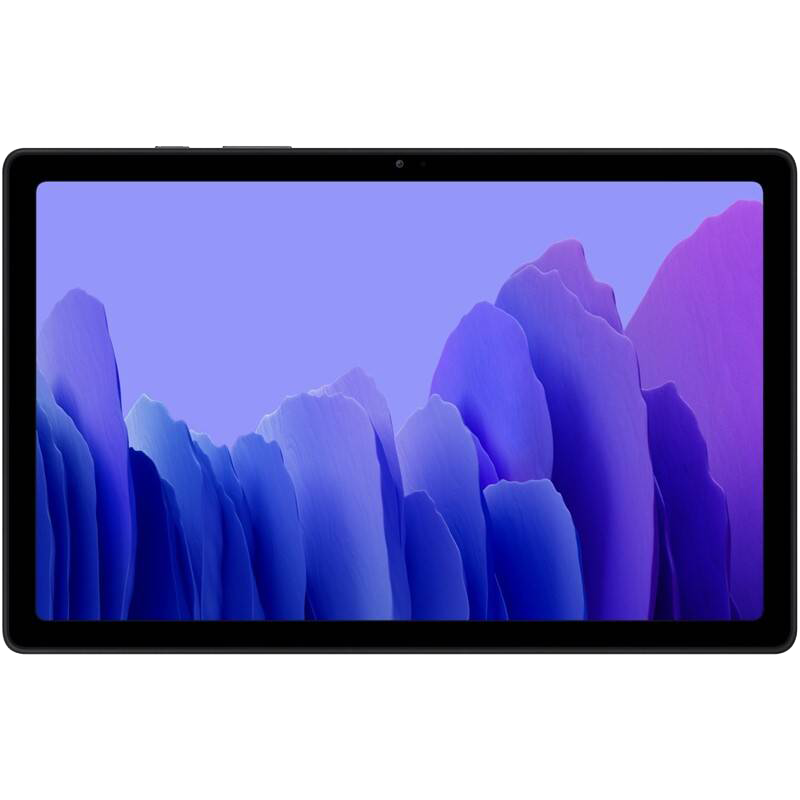
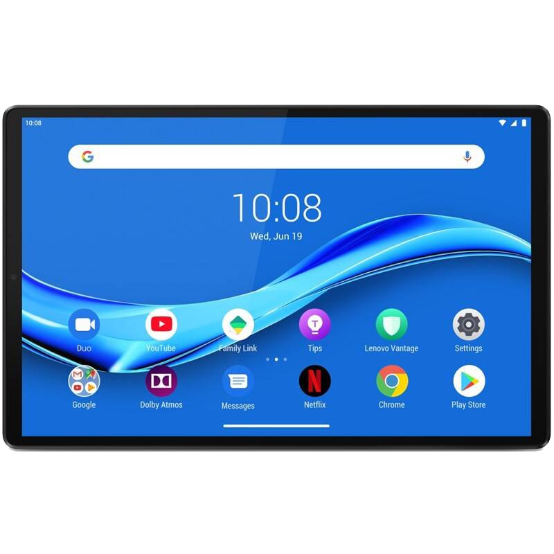
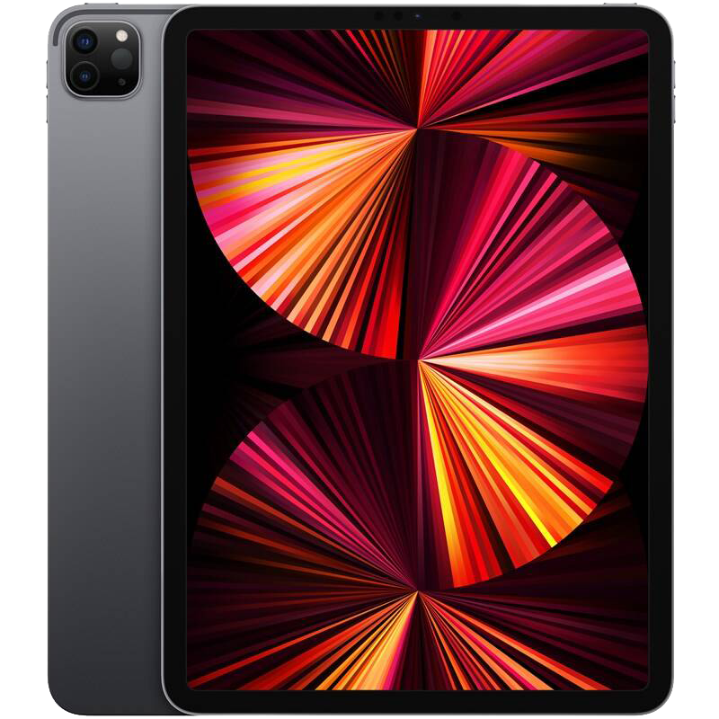
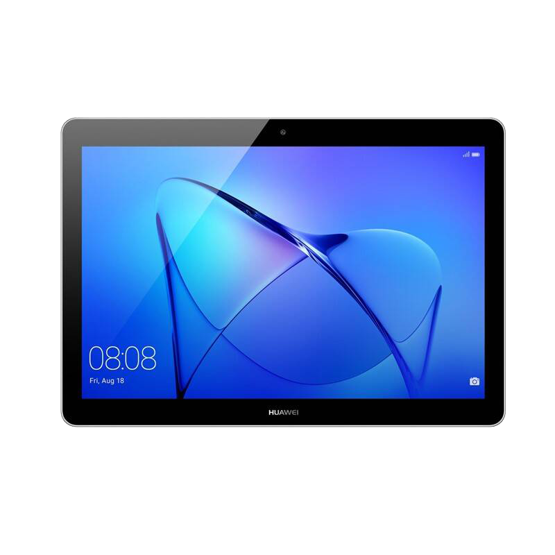
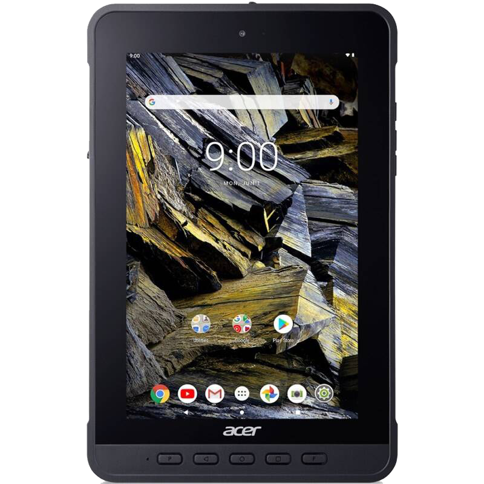

Lenovo Tab M10 Plus LTE 64GB
- Popis
- Lenovo Tab M10 Plus vás ohromí osemjadrovým procesorom, LTE pripojením či zvukovou technológiou Dolby Atmos. Vďaka jeho 10,3-palcovému displeju s Full HD rozlíšením si prezriete každý obrazový detail v perfektnej kvalite. Tablet je vybavený Google Asistentom, odomykaním pomocou tváre i ambientným módom.
Kľúčové vlastnosti:
- Uhlopriečka 10.3 "
- Rozlíšenie displeja (px) 1920 x 1200
- Typ displeja IPS LCD
- Počet jadier 8
- Typ procesora Mediatek
- Označenie procesora Helio P22T
- Frekvencia procesora 2300 MHz
- Kapacita flash pamäte 64 GB
- Veľkosť pamäte RAM 4 GB
- Rozlíšenie kamery 8 Mpx
650€

Samsung Galaxy Tab A7 (SM-T500NZAAEUE)
- Popis
- Je vybavený 10,4-palcovým displejom a zvukovou technológiou Dolby Atmos. Nechýba mu kvalitný osemjadrový procesor, 8-Mpix fotoaparát ani veľkokapacitná batéria. Tablet má špeciálny mód pre deti, ktorý im poskytne bezpečné digitálne prostredie, aj tmavý režim.
Kľúčové vlastnosti:
- Uhlopriečka 10.4 "
- Rozlíšenie displeja (px) 2000 x 1200
- Typ displeja aktívny TFT
- Počet jadier 8
- Typ procesora Snapdragon
- Označenie procesora 662
- Frekvencia procesora 2000 MHz
- Kapacita flash pamäte 32 GB
- Veľkosť pamäte RAM 3 GB
- Rozlíšenie kamery 8 Mpx
650€

Apple iPad Pro 11 (2021)
- Popis
- Apple iPad Pro 11 (2021) je najvýkonnejším zariadením svojho druhu. Ponúka totiž dokonalé spojenie skvele optimalizovaného systému iPadOS s prevratným čipom Apple M1. Výsledkom je, že je perfektným nástrojom aj na náročné práce na cestách.
Kľúčové vlastnosti:
- Uhlopriečka 11.4 "
- Rozlíšenie displeja (px) 2000 x 1200
- Typ displeja aktívny TFT
- Počet jadier 8
- Typ procesora Snapdragon
- Označenie procesora 662
- Frekvencia procesora 3200 MHz
- Kapacita flash pamäte 32 GB
- Veľkosť pamäte RAM 4 GB
- Rozlíšenie kamery 8 Mpx
1400€

Huawei MediaPad T3 10 32 GB (TA-T310W32TOM)
- Popis
- Predstavujeme vám inteligentný tablet Huawei MediaPad T3 10, ktorý sa zaručene stane nepostrádateľným pomocníkom pre celú vašu rodinu. Skvelé zobrazenie vám za všetkých okolností zaistí veľký displej s uhlopriečkou 9,6 palca.
Kľúčové vlastnosti:
- Uhlopriečka 9.6 "
- Rozlíšenie displeja (px) 1280 x 800
- Typ displeja IPS LCD
- Počet jadier 4
- Typ procesora Qualcomm
- Označenie procesora 425
- Frekvencia procesora 1400 MHz
- Kapacita flash pamäte 32 GB
- Veľkosť pamäte RAM 2 GB
- Rozlíšenie kamery 5 Mpx
350€

Acer Enduro T1 (ET108-11A) (NR.R0MEE.002)
- Popis
- Ide o praktický prístroj, ktorý je ideálnou voľbou pre pracovníkov v maloobchode, skladoch i napríklad výrobných závodoch. Je veľmi odolný, a tak vydrží aj hrubšie zaobchádzanie. Ponúka programovateľné tlačidlá a veľa voliteľného príslušenstva, takže ho môžete presne prispôsobiť svojim potrebám.
Kľúčové vlastnosti:
- Uhlopriečka 8 "
- Rozlíšenie displeja (px) 1280 x 800
- Typ displeja IPS LCD
- Počet jadier 8
- Typ procesora Mediatek
- Označenie procesora MT8385
- Frekvencia procesora 2000 MHz
- Kapacita flash pamäte 64 GB
- Veľkosť pamäte RAM 4 GB
- Rozlíšenie kamery 5 Mpx